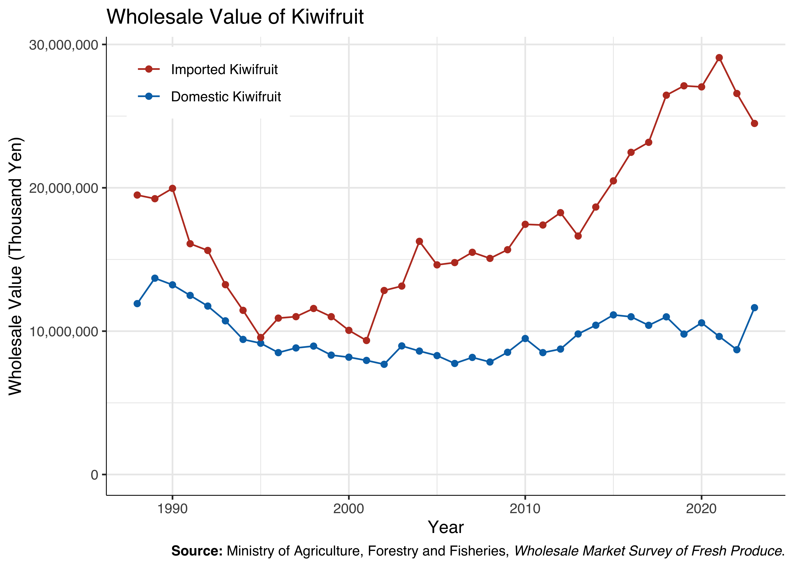
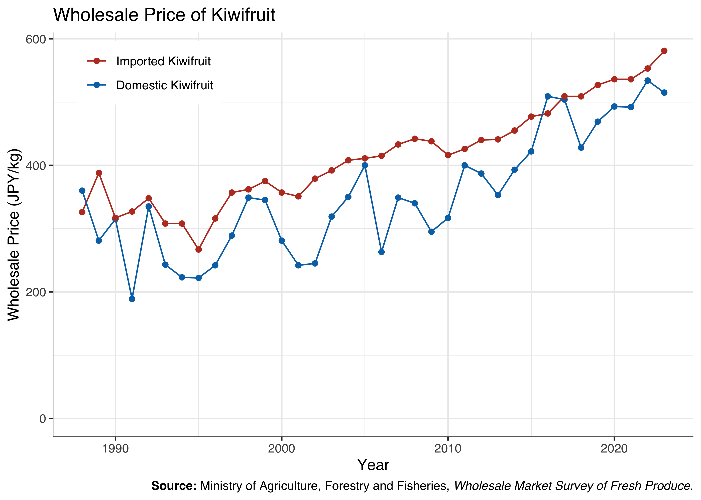

library(readxl)
library(dplyr)
library(arrow)
library(DT)
library(ggplot2)
library(scales)
library(gghighlight)
library(ggthemes)
library(ggsci)
library(ggrepel)
library(ggtext)
outdir <- "../data/wholesale"
figdir <- "../fig"
dir.create(outdir, showWarnings = FALSE, recursive = TRUE)
dir.create(figdir, showWarnings = FALSE)
outdirestat <- "../data/e-stat/青果物卸売市場調査"
dir.create(outdirestat, showWarnings = FALSE, recursive = TRUE)Wholesale Market Survey of Fresh Produce: Wholesale Volumes
1 Data
1.1 Domestic Kiwifruit
青果物卸売市場調査 / 長期累年 青果物卸売市場調査
キウイフルーツ(昭和60年～令和５年)
- 総数
- 数量（t）
- 価額（千円）
- 価格（円／kg）
https://www.e-stat.go.jp/stat-search/files?stat_infid=000040208655
dir.create(file.path(outdirestat, "1985-2023"), showWarnings = FALSE, recursive = TRUE)
xlsx_url <- "https://www.e-stat.go.jp/stat-search/file-download?statInfId=000040208655&fileKind=0"
xlsx_file <- "g002c-002-054-000-000.xls"
file_path <- file.path(outdirestat, "1985-2023", xlsx_file)
if (!file.exists(file_path)) {
download.file(xlsx_url, file_path)
}
df_domestic <- read_excel(file_path, skip = 5) |>
filter(!is.na(`...1`)) |>
select(1:4) |>
mutate(year = as.integer(sub(".*\\((\\d{4})\\).*", "\\1", `...1`))) |>
select(-1) |>
setNames(c("quantity", "value", "price", "year")) |>
mutate(across(c(quantity, value, price), ~ as.integer(gsub("…", "", .))))1.2 Imported Kiwifruit
青果物卸売市場調査 / 長期累年 青果物卸売市場調査
輸入キウイフルーツ(昭和60年～令和５年)
- 総数
- 数量（t）
- 価額（千円）
- 価格（円／kg）
https://www.e-stat.go.jp/stat-search/files?stat_infid=000040208666
dir.create(file.path(outdirestat, "1985-2023"), showWarnings = FALSE, recursive = TRUE)
xlsx_url <- "https://www.e-stat.go.jp/stat-search/file-download?statInfId=000040208666&fileKind=0"
xlsx_file <- "g002c-002-065-000-000.xls"
file_path <- file.path(outdirestat, "1985-2023", xlsx_file)
if (!file.exists(file_path)) {
download.file(xlsx_url, file_path)
}
df_imported <- read_excel(file_path, skip = 5) |>
filter(!is.na(`...1`)) |>
select(1:4) |>
mutate(year = as.integer(sub(".*\\((\\d{4})\\).*", "\\1", `...1`))) |>
select(-1) |>
setNames(c("quantity", "value", "price", "year")) |>
mutate(across(c(quantity, value, price), ~ as.integer(gsub("…", "", .))))1.3 Merge
df <- bind_rows(
df_domestic |> mutate(country = "Domestic Kiwifruit"),
df_imported |> mutate(country = "Imported Kiwifruit")
)
df$country <- factor(df$country, levels = c("Imported Kiwifruit", "Domestic Kiwifruit"))
write.table(df, file = file.path(outdir, "wholesale_1985-2023.csv"), sep = ",", row.names = FALSE)
write_parquet(df, sink = file.path(outdir, "wholesale_1985-2023.parquet"))1.4 Read the Data
df <- read.csv(file.path(outdir, "wholesale_1985-2023.csv"), header = TRUE)
df <- read_parquet(file.path(outdir, "wholesale_1985-2023.parquet"))2 Tables
DT::datatable(
df, rownames = FALSE, filter = 'top',
extensions = 'Buttons',
options = list(
pageLength = 10,
dom = 'Blfrtip',
buttons = list(
c('csv', 'excel'),
I('colvis')
)
)
) |>
DT::formatCurrency(grepl("quantity|value|price", names(df)), currency = "", interval = 3, mark = ",", digits = 0)df <- na.omit(df)3 Figures
3.1 Wholesale Volume
p <- ggplot(data = df, aes(x = year, y = quantity, group = country, color = country)) +
geom_line() +
geom_point() +
scale_y_continuous(limits = c(0, NA), labels = scales::label_comma()) +
labs(
title = "Wholesale Volume of Kiwifruit",
x = "Year",
y = "Wholesale Volume (t)",
caption = "**Source:** Ministry of Agriculture, Forestry and Fisheries, _Wholesale Market Survey of Fresh Produce_.",
color = NULL
) +
theme_bw() +
scale_color_nejm() +
theme(
panel.border = element_blank(),
axis.line.x = element_line(linewidth = .25),
axis.line.y = element_line(linewidth = .25),
text = element_text(family = "Helvetica"),
plot.caption = element_markdown()
) +
guides(fill = guide_legend(title = NULL)) +
theme(
legend.position = c(.85, .9),
text = element_text(family = "Helvetica")
)
ggsave("wholesale_volume_line.pdf", plot = p, device = cairo_pdf, path = figdir)
p
label_data <- df |>
filter(year == 2011, .by = country)
p <- ggplot(data = df, aes(x = year, y = quantity, group = country, color = country)) +
geom_line() +
geom_point() +
scale_y_continuous(limits = c(0, NA), labels = scales::label_comma()) +
geom_text_repel(data = label_data, aes(label = country),
size = 4,
color = "black",
family = "Helvetica",
segment.color = "black",
point.padding = 1,
nudge_x = -2,
nudge_y = c(-10000, 10000),
segment.curvature = 0,
segment.ncp = 0) +
labs(
# title = "Wholesale Volume of Kiwifruit",
x = "Year",
y = "Wholesale Volumes (t)",
# caption = "**Source:** Ministry of Agriculture, Forestry and Fisheries, _Wholesale Market Survey of Fresh Produce_.",
) +
theme_bw() +
scale_color_uchicago() +
theme(
legend.position = "none",
panel.border = element_blank(),
axis.line.x = element_line(linewidth = .25),
axis.line.y = element_line(linewidth = .25),
text = element_text(family = "Helvetica")
)
ggsave("figure3.pdf", plot = p, device = cairo_pdf, path = figdir)
ggsave("figure3.png", plot = p, path = figdir, dpi = 600)
p
3.2 Wholesale Value
p <- ggplot(data = df, aes(x = year, y = value, group = country, color = country)) +
geom_line() +
geom_point() +
scale_y_continuous(limits = c(0, NA), labels = scales::label_comma()) +
labs(
title = "Wholesale Value of Kiwifruit",
x = "Year",
y = "Wholesale Value (Thousand Yen)",
caption = "**Source:** Ministry of Agriculture, Forestry and Fisheries, _Wholesale Market Survey of Fresh Produce_.",
color = NULL
) +
theme_bw() +
# paletteer::scale_fill_paletteer_d("colorblindr::OkabeIto") +
scale_color_nejm() +
theme(
panel.border = element_blank(),
axis.line.x = element_line(linewidth = .25),
axis.line.y = element_line(linewidth = .25),
text = element_text(family = "Helvetica"),
plot.caption = element_markdown()
) +
guides(fill = guide_legend(title = NULL)) +
theme(
legend.position = c(.15, .9),
text = element_text(family = "Helvetica")
)
ggsave("wholesale_value.pdf", plot = p, device = cairo_pdf, path = figdir)
p
3.3 Wholesale Price
p <- ggplot(data = df, aes(x = year, y = price, group = country, color = country)) +
geom_line() +
geom_point() +
scale_y_continuous(limits = c(0, NA), labels = scales::label_comma()) +
labs(
title = "Wholesale Price of Kiwifruit",
x = "Year",
y = "Wholesale Price (JPY/kg)",
caption = "**Source:** Ministry of Agriculture, Forestry and Fisheries, _Wholesale Market Survey of Fresh Produce_.",
color = NULL
) +
theme_bw() +
# paletteer::scale_color_paletteer_d("colorblindr::OkabeIto") +
scale_color_nejm() +
theme(
panel.border = element_blank(),
axis.line.x = element_line(linewidth = .25),
axis.line.y = element_line(linewidth = .25),
text = element_text(family = "Helvetica"),
plot.caption = element_markdown()
) +
guides(fill = guide_legend(title = NULL)) +
theme(
legend.position = c(.15, .9),
text = element_text(family = "Helvetica")
)
ggsave("wholesale_price.pdf", plot = p, device = cairo_pdf, path = figdir)
p